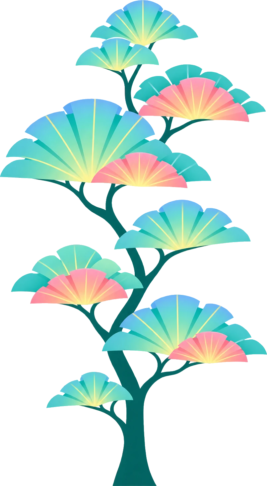
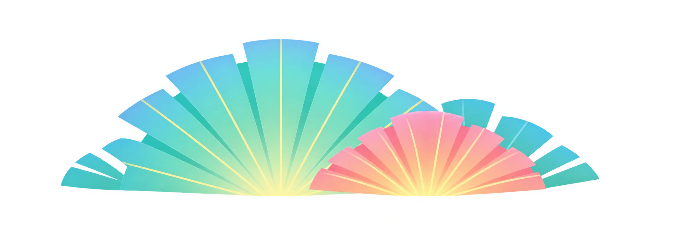

北京中轴线 / 由南向北01 / 10
南端起点
永定门
白昼AI生成卷轴底纹与植物
一线串联，万象同城
行至北端，
再回望整条中轴。
本网页使用美工组绘制的建筑与长轴图；卷轴底纹和装饰植物为 AI 辅助生成的补充素材。画面用于文化体验与交互演示，并非测绘或建筑复原。


南端起点
一线串联，万象同城
本网页使用美工组绘制的建筑与长轴图；卷轴底纹和装饰植物为 AI 辅助生成的补充素材。画面用于文化体验与交互演示，并非测绘或建筑复原。